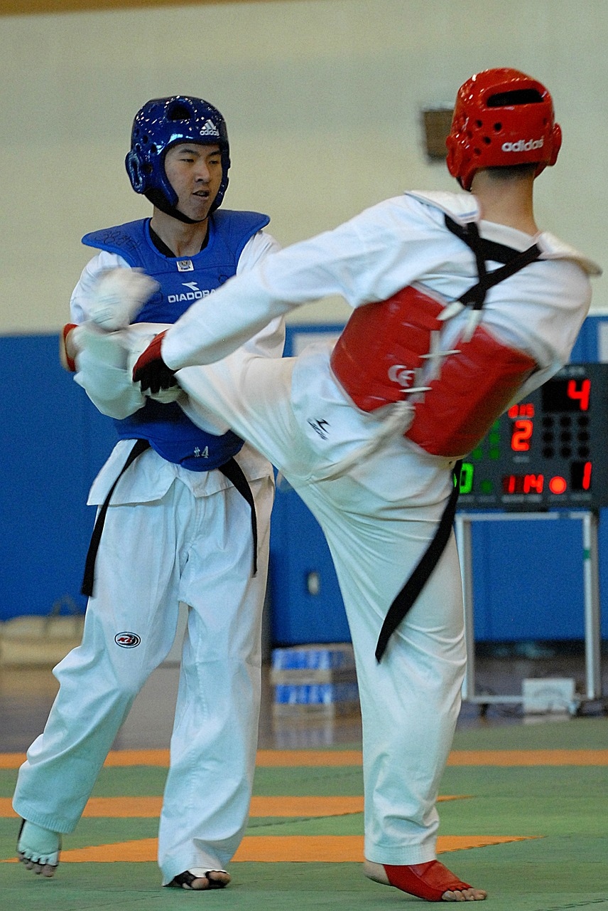

El taekwondo es un arte marcial originaria de Corea del Sur en el año 1945, oficializado en 1955 en Séul (Corea del sur)
Proviene de la fusión de dos estilos, el Taekkkyon coreano y el Karate-do japonés. La especialidad del taekwondo son patadas fuertes desde cualquier ángulo, aunque tambien se utilizan golpes de puño y a mano abierta.
Yo llevo haciendo taekwondo desde que tenía 8-9 años, lo practico en el polideportivo de Bormujos.
Este hobbie es mi favorito porque le tengo mucho cariño y se ha vuelto mi deporte favorito